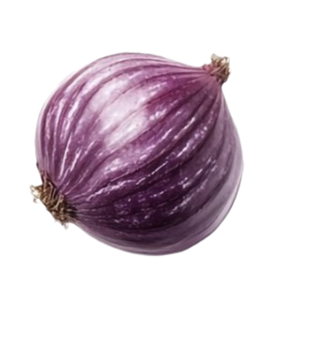
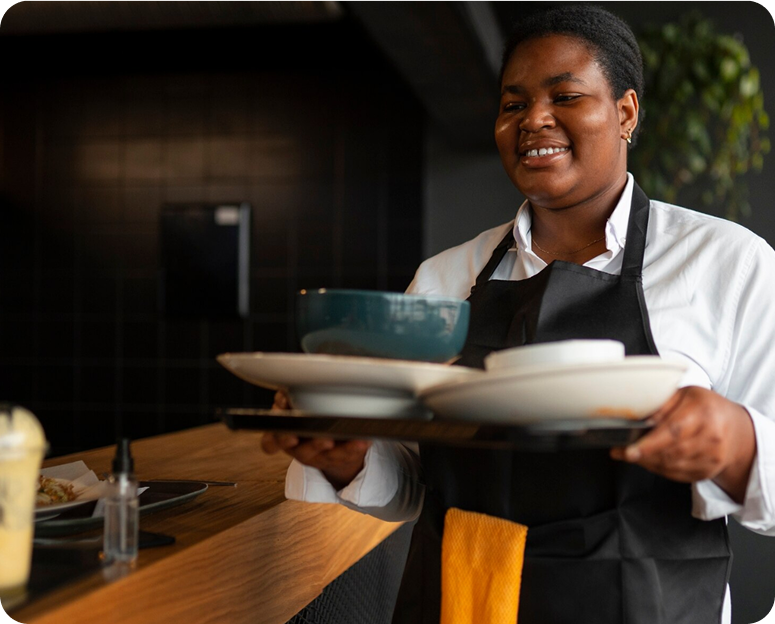

Every Meal Brings Good
Home Nostalgia
Since 2018, Aurora Dining has been about more than food it's about bold Nigerian flavors, tradition, and soulful nourishment.


Since 2018, Aurora Dining has been about more than food it's about bold Nigerian flavors, tradition, and soulful nourishment.
Back in November 2018, most Nigerians saw dining out as either foreign fast food or roadside stalls. Aurora Dining changed that by bringing a true taste of home to the table.
We began with a simple mission: to serve authentic, home-cooked Nigerian meals to busy city professionals and families who wanted real comfort food without the wait.
Aurora Dining is more than just food, it's a way to relive special moments. From smoky Jollof rice to soft pounded yam and our unique Ofada rice, every dish takes you back to those warm Sundays with family and joyful village celebrations. Each meal is a proud reminder of Nigeria's rich culinary heritage.

Our mission is to serve fresh dishes with a twist, creating a welcoming space where people connect over good food and warm hospitality
To be the destination for fresh and exciting food that creates a welcoming space and feels like home.
At Aurora Dining, we call our team caregivers, because they do more than serve food. From the chefs in the kitchen to the servers in the dining room, they bring warmth, energy, and pride to every plate.